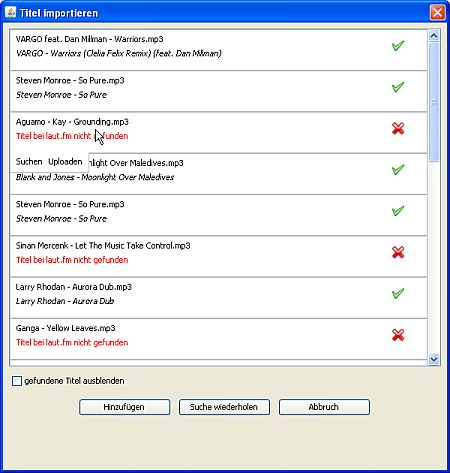

Du kannst mp3-Dateien und Playlists (m3u-Dateien) aus Deinem Dateisystem direkt in eine Playlist einfügen. Station Admin liest dann die ID3-Tags der Datei(en) aus, sucht die passenden aus dem laut.fm-Titelpool und fügt sie in die Playlist ein.
Zum Einfügen von Titeln aus mp3/m3u-Files hast Du zwei Möglichkeiten:
Sind alle zu importierenden Titel schon bekannt - d. h. es handelt sich um von Dir hochgeladene Titel oder Du verwendest sie schon in anderen Playlists - fügt Station Admin die Titel ohne weitere Nachfrage einfach ein. Kann einer oder können mehrere Titel nicht im lokalen Titelpool gefunden werden öffnet sich eine Dialogbox in der Du den Status aller Titel siehts.

Station Admin versucht zunächst die fehlenden Titel selbst in der laut.fm-Titeldatenbank zu finden. Gelingt das werden die Titel mit einem Haken als gefunden markiert. Wurden mehrere mögliche Titel gefunden haben Titel deren Album mit dem der mp3-Datei übereinstimmt Vorrang vor anderen. Auch haben eigene Uploads Vorrang vor fremden Uploads. Gibt es immer noch mehrere Kandidaten kannst Du aus einer Auswahlliste einen Titel auswählen.
Konnte Station Admin keinen passenden Titel finden bleiben die Titel mit einem roten Kreuz stehen. Du hast jetzt mehrere Möglichkeiten:
Hast Du Titel hochgeladen solltest Du nach erfolgreichem Upload noch einmal auf klicken - dann sucht Station Admin erneut nach den fehlenden Titeln und wird sie dieses Mal (hoffentlich) finden.
Sind schließlich alle Titel gefunden kannst Du auf klicken um die Titel der Playlist hinzufügen. Sollte es Titel geben die nicht gefunden wurden werden diese einfach ausgelassen.